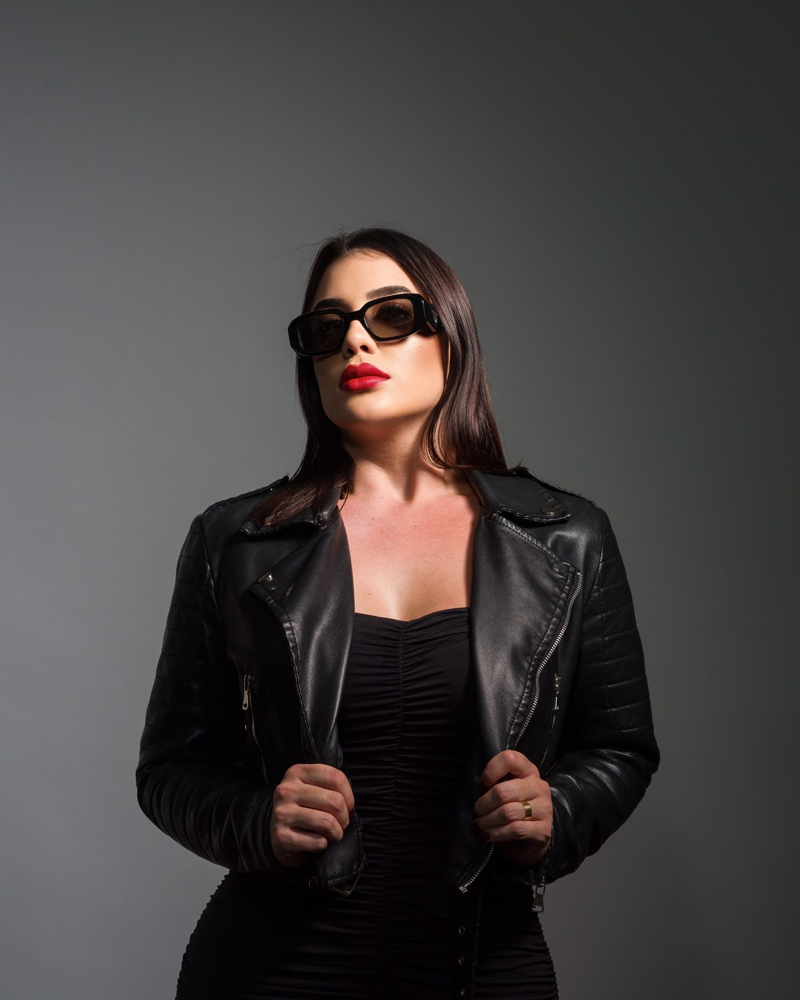

DJ · Melodic Techno

Ref. abertura · Lerock's + Paradigm FestivalFoto de sangria total e a logo original (sem redesenho, sem letreiro novo) colada por cima, sobrepondo a borda da foto — igual ao wordmark do Lerock's sobre o ombro dele. Os títulos das próximas seções passam a usar uma tipografia bold e arredondada (Unbounded), na linha do "PARADIGM FESTIVAL". A faixa corrida no topo (marquee) substitui o texto de status solto. Tudo toca: a foto encosta direto na barra preta de baixo, sem respiro entre os blocos.
01 · Set em destaque
Entre no
universo sonoro.
 Assistir ao set
Assistir ao set
B2B Lerock's × Bárbara Thomaz
- Local
- New York Pub
- Data
- a confirmar
- Onde ver
- YouTube
Um registro ao vivo da pista. Abre no YouTube, sem carregar o player aqui.
Ref. setCabeçalho colado direto na faixa com fundo escuro, sem a sobra de espaço de antes. A miniatura é provisória — trocar pelo frame real do vídeo. Se houver set solo aprovado, ele assume o lugar e o B2B vai para o acervo.

02 · Sobre a artista
Energia.
Emoção.
Pista.
Sou Bárbara Thomaz, e a música me faz sentir viva. Encontrei no Melodic Techno uma forma de unir energia, intensidade e emoção, e de compartilhar essa conexão com quem está na pista.
Cada set é uma jornada para viver o presente, dançar com liberdade e se deixar levar pelo som. É essa experiência que quero dividir: música que aproxima, desperta sensações e cria momentos que ficam.
Ref. sobreA foto encosta direto no bloco de texto, sem coluna de ar entre os dois — o violeta cheio no painel de texto dá o contraste, no lugar do fundo preto neutro. Texto do briefing, ainda para aprovação da Bárbara. Sem anos de carreira, cidades ou números de público até ela informar.
03 · Música e sets
Música
para sentir.
Ref. música · Lerock'sTítulo de cada faixa em tipografia gigante, condensada — a mesma ideia do "RAÍZES NO UNDERGROUND" e da lista de faixas do Lerock's, só que aqui cada linha é um link de verdade pra plataforma, não uma faixa que toca ali. Nenhum player embutido carrega junto com a página. "Who Is Bárbara" segue como playlist até confirmarmos o que é.
04 · Galeria
Em cena.
Ref. galeria · Lerock'sFita horizontal de fotos coladas, sem espaço entre elas, com número e legenda curta sobre a imagem — igual à fita "01 FONES · 02 RETRATO" do Lerock's. Rola na horizontal no celular. Quando houver fotos de apresentações reais, entram alternadas com os retratos de estúdio.
05 · Bookings e press kit
Leve essa
experiência
pro seu evento.
Para bookings e informações sobre apresentações, entre em contato.
- (19) 98900-5660
- E-mail profissional
- a confirmar
- Responsável
- a confirmar
- @bathomaz
Ref. bookingsFaixa violeta cheia de ponta a ponta, sem moldura — a mesma função do bloco vermelho "WELCOME TO NEVERLAND" do Lerock's, só que carregando o convite pra contratar em vez do álbum. O número do WhatsApp vem do site atual (lá está sem o 55; aqui já corrigido).